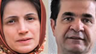

|
|
|
Browsing
Contact Us |
Campaigners |
Face to Face |
Tribune |
Interview |
News |
On the Web |
One Million |
Report
Farsi | Français | German | Italian | Spanish | العربية Also in this section
|
 European Union Gives Rights Award to Convicted IraniansSunday 28 October 2012 By THOMAS ERDBRINK Published: October 26, 2012 TEHRAN — The European Union gave its most prestigious human rights award on Friday to two convicted Iranian activists, Nasrin Sotoudeh, an imprisoned lawyer, and Jafar Panahi, a fomerly imprisoned filmmaker. The award, the Sakharov Prize for Freedom of Thought, which has previously gone to international figures like Nelson Mandela of South Africa and Daw Aung San Suu Kyi of Myanmar, comes at a time of deepening tensions between Iran and the West. Last week, the European Union, which in July began a boycott of Iranian oil, terminated the European satellite access to nearly two dozen Iranian state television and radio channels, which had relied on that access for their broadcasts. Martin Schulz, the president of the European Parliament, said in a statement that the prize was awarded as “recognition to a woman and a man who have not been bowed by fear and intimidation and who have decided to put the fate of their country before their own.” He said he hoped that Ms. Sotoudeh and Mr. Panahi would be able to travel to Europe to receive the prize next September. Ms. Sotoudeh, 49, one of Iran’s most prominent rights activists, is serving a six-year sentence for acting against national security and spreading propaganda against the government. Last week, she started a hunger strike after the authorities denied her visits with her two children. Her husband, Reza Khandan, said he and his family were very excited. “I will tell Nasrin the news as soon as I get the chance to visit her in prison,” he said. Both he and his teenage daughter are barred from leaving Iran, so Mr. Khandan was not yet sure who would travel to Europe to pick up the prize of about $65,000 to be shared with Mr. Panahi. Mr. Panahi, an award-winning filmmaker, was sentenced to a six-year term in 2010, for his involvement in the opposition movement after President Mahmoud Ahmadinejad’s disputed election victory in 2009. He was also banned from making movies for 20 years. He has been released on bail but is prohibited from leaving the country. In 2003, Shirin Ebadi, an Iranian lawyer and women’s rights activist now living in exile, won the Nobel Peace Prize. Ms. Sotoudeh was nominated by Marietje Schaake, a Dutch member of the European Parliament who focuses on Iran. “These winners are true symbols of the long struggle the Iranian people face every day,” she said in a statement. “The systematic repression, use of violence and censorship are felt by the entire population.” There was no official reaction from the Iranian authorities, who have called such human rights awards political tools to exert pressure on governments disliked by the Western powers. |